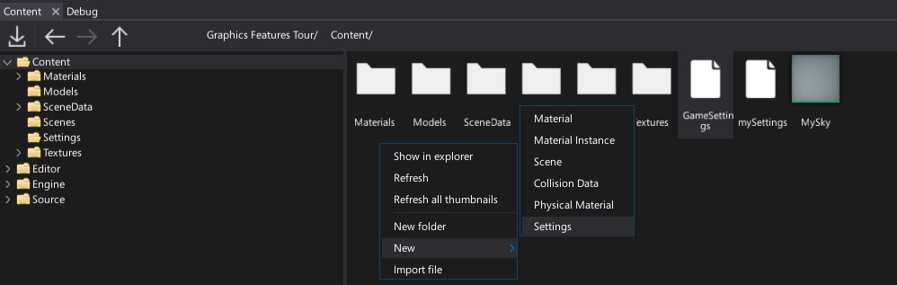
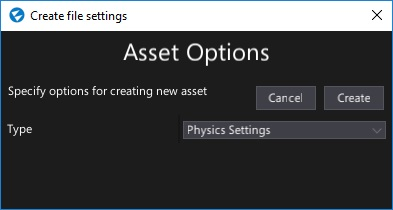

Game Settings
Game Settings infrastructure is used to prepare the Flax options for the builded game. By using game settings you can set the initial game scene, link your plugin runtime options or more. This section covers the main concept of game settings and documents the related asset types.
Root asset
In order to provide more universal design and unify the projects structure game settings asset is always located in Content/GameSettings.json. This file is in json format and contains the basic game description (product name, company, etc.) and references other assets (time settings, layers and tags, etc.).
Example game settings file can be found here. By default all Flax samples and templates contain a proper game settings to use.
Creating settings

You can use the Content window to create new settings. Simply right-click in the Content folder and select option New -> Settings, specify its name and press Enter. Then select the new asset type. Game settings asset or any other settings asset is normal Json resource so you can rename/move/edit them like other asset types. It's highly recommended to use a version control system for settings as they are text files and should be versioned when working in a team.

Properties
| Property | Description |
|---|---|
| Product Name | The name of your game. |
| Company Name | The name of your company or organization. |
| Copyright Notice | The copyright note used for content signing (eg. source code header). |
| Icon | The default application icon. Can be overriden per platform. |
| FirstScene | Reference to the first scene to load on a game startup. |
| No Splash Screen | True if skip showing splash screen image on the game startup. |
| Splash Screen | Reference to the splash screen image to show on a game startup. |
| Time | Reference to Time Settings asset. Contains initial time manager options. |
| Audio | Reference to Audio Settings asset. Contains initial audio playback engine options. |
| Layers And Tags | Reference to Layers And Tags Settings asset. Contains actors tags and layer names used in your game. |
| Physics | Reference to Physics Settings asset. Contains physics simulation options. |
| Input | Reference to Input Settings asset. Contains initial virtual input layout. |
| Graphics | Reference to Graphics Settings asset. Contains initial rendering options. |
| Navigation | Reference to Navigation Settings asset. Contains initial navmesh building options. |
| Game Cooking | Reference to Build Settings asset. Contains Game Cooker profiles and additional options used during games building. |
| Custom Settings | Collection of custom json assets used by the game and plugins. To learn more see the related documentation here. |
| Windows | Reference to Windows Settings asset. Contains options used when building game for Windows. |
| Universal Windows Platform | Reference to Universal Windows Platform Settings asset. Contains options used when building game for Xbox One and Windows Store. |
| PlayStation 4 | Reference to PlayStation 4 Settings settings. Contains options used when building game for PlayStation 4. |
| Xbox Scarlett | Reference to Xbox Scarlett Settings settings. Contains options used when building game for Xbox Scarlett. |
Accessing settings at runtime
Example code to access game settings data in game code.
C#:
using FlaxEditor.Content.Settings;
using FlaxEngine;
public class TestSettingsUsage : Script
{
public override void OnEnable()
{
var gameSettings = GameSettings.Load();
Debug.Log("Game name: " + gameSettings.ProductName);
var timeSettings = GameSettings.Load<TimeSettings>();
Debug.Log("Draw FPS from settings: " + timeSettings.DrawFPS);
}
}
C++:
#include "Engine/Core/Log.h"
#include "Engine/Core/Config/GameSettings.h"
#include "Engine/Core/Config/TimeSettings.h"
#include "Engine/Scripting/Script.h"
class GAME_API TestSettingsUsage : public Script
{
DECLARE_SCRIPTING_TYPE(TestSettingsUsage);
public:
void OnEnable() override
{
const auto gameSettings = GameSettings::Get();
LOG(Info, "Game name: {0}", gameSettings->ProductName);
const auto timeSettings = TimeSettings::Get();
LOG(Info, "Draw FPS from settings: {0}", timeSettings->DrawFPS);
}
};